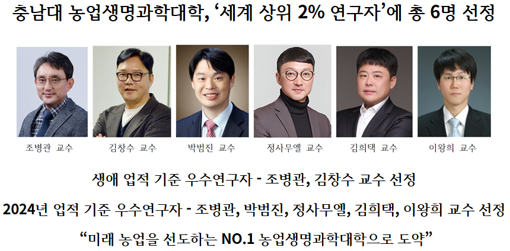

충남대 농업생명과학대학, '세계 상위 2% 연구자'에 총 6명 선정

생애 업적 기준 우수연구자 - 조병관, 김창수 교수 선정
2024년 업적 기준 우수연구자 - 조병관, 박범진, 정사무엘, 김희택, 이왕희 교수 선정
"미래 농업을 선도하는 NO.1 농업생명과학대학으로 도약"
미국 스탠퍼드대학교와 출판사 엘스비어(Elsevier)가 공동 발표한 'Top 2% Scientists List'에서 우리 농업생명과학대학 총 6명의 교수가 선정되며, 국내 최고 거점국립대 농업생명과학대학으로서의 위상을 공고히 했다.
최근 스탠퍼드대학교와 글로벌 정보분석·연구 논문 출판기업인 엘스비어가 SCOPUS 기반 논문을 바탕으로 논문 수 및 피인용도, H-index, 학문 분야 랭킹 등 다양한 지표를 활용해 매년 전세계 상위 2%의 연구자를 선정한 가운데, 충남대 농업생명과학대학은 총 6명의 교수가 이름을 올리는 쾌거를 거뒀다.
이번 선정에서는 조병관(스마트농업시스템기계공학과) 교수가 생애업적(커리어) 부문과 2024년 단년도 기준 두 부문 모두에 이름을 올렸으며, 김창수(식물자원학과) 교수가 생애업적(커리어) 부문에, 박범진(산림환경자원학과), 정사무엘(동물자원생명과학과), 김희택(식품공학과), 이왕희(스마트농업시스템기계공학과) 교수가 2024년 단년도 기준 부문에 이름을 올렸다.
최근 충남대학교 농업생명과학대학은 2025 QS 세계대학평가 농업·임업(Agriculture & Forestry) 분야에서 세계 151–200위권에 이름을 올리며, 세계적인 명문 단과대학으로 인정받고 있다. 충남대학교는 거점국립대학 중 교원 1인당 교외 연구비와 1인당 SCI급 논문 실적에서 모두 1위를 차지하며, 명실상부한 글로벌 연구중심대학으로 자리매김하고 있으며, 농업생명과학대학은 이러한 성과의 중심에서 핵심적인 역할을 담당하고 있다.